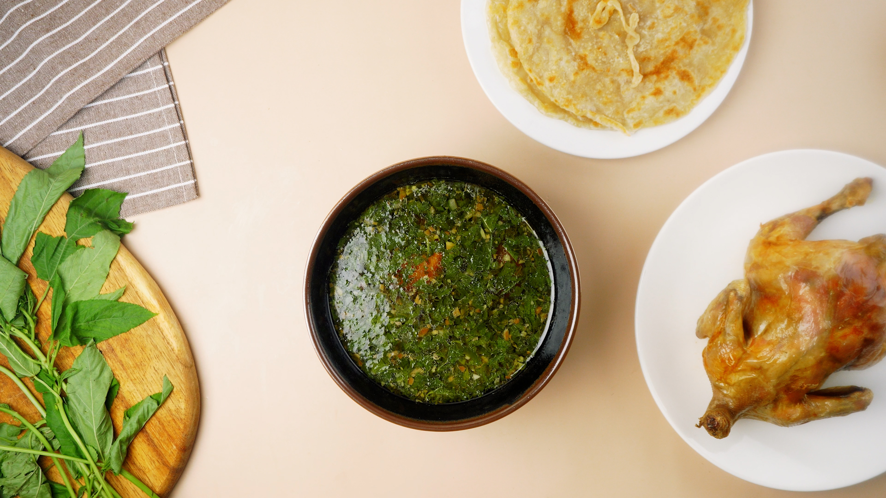

Molokhiya

Description
Molokhiya, also known as Egyptian spinach, is a traditional Egyptian dish
that is both nutritious and flavorful. The main ingredient of this
dish is the leaves of the molokhiya plant, which are finely chopped and
cooked to create a thick, green, and slightly slimy stew. The stew is typically
flavored with garlic, coriander, and sometimes chicken or meat broth for added
richness. Molokhiya is often served over rice or with bread, and it is a popular
choice for family meals and gatherings in Egypt. Its unique taste and texture
make it a beloved dish in Egyptian cuisine, and it is sure to be a hit with
anyone looking to explore new flavors and culinary traditions.
Ingredients
- 3 ½ cups chicken broth
- 1 Tbs chicken bouillon
- 14 oz frozen minced molokhia leaves (aka jute leaves)
- 2 Tbs butter
- 5 cloves minced garlic
- ½ tsp salt
- ½ tsp pepper
Steps
- Add the chicken broth and bouillon to a large pot. Heat on high until boiling
- Add the frozen molokhia leaves to the boiling pot
- Mix and allow the leaves to melt completely and come to a boil again
- In a small frying pan, melt the butter on medium heat
- Add the minced garlic, salt and pepper. Fry the garlic in the butter for about 2-3 minutes until lightly browned
- Pour the garlic mixture into the pot with the molokhia
- Mix well and let the molokhia boil for another 2-3 minutes before turning off heat
- Serve with rice and chicken. Enjoy!
Recipe source